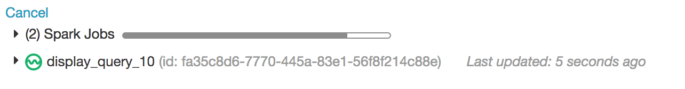

Cross-account Kinesis access with an AssumeRole policy
In AWS you can set up cross-account access, so the computing in one account can access AWS services in another account. One way to grant access, described in Tutorial: Configure S3 access with an instance profile, is to grant an account direct access to services in another account. Another way to grant access to other services is to allow an account to assume a role in another account.
Consider AWS Account A with account id <deployment-acct-id> and AWS Account B with account number <kinesis-owner-acct-id>. Account A is used when deploying your Databricks workspace: EC2 services are managed by this account. Kinesis is managed by Account B.
This article provides the steps to configure Account A to use the AWS AssumeRole action to access Kinesis in Account B as a role in Account B. To enable this access you perform configuration in Account A and Account B in the Databricks admin settings, when you configure a Databricks cluster, and when you run a notebook that accesses Kinesis.
Requirements
AWS administrator access to IAM roles and policies in the AWS account of the Databricks deployment and the AWS account of the Kinesis service.
Step 1: Set up cross-account role in Kinesis account
In your Kinesis AWS Account, go to the IAM service and click the Roles tab.
Click Create role. In the Select type of trusted entity panel, click Another AWS Account. Paste in the Account ID for your Databricks AWS account,
<deployment-acct-id>. Optionally, you can specify an External ID but it is not required.Click Next: permissions and give this role permission to access Kinesis. You can provide your own JSON or use the AmazonKinesisFullAccess policy.
Click Next: Review and give the role a name, for example
KinesisCrossAccountRole.Click Create role. The list of roles displays.
In the Roles list, click
KinesisCrossAccountRoleand verify the trusted account contains a JSON policy like:{ "Version": "2012-10-17", "Statement": [ { "Effect": "Allow", "Principal": { "AWS": [ "arn:aws:iam::<deployment-acct-id>:root" ], "Service": "ec2.amazonaws.com" }, "Action": "sts:AssumeRole" } ] }
Copy the role ARN, for example:
arn:aws:iam::<kinesis-owner-acct-id>:role/KinesisCrossAccountRole.
Step 2: Set up Assume Role in Databricks deployment account
In your Databricks deployment AWS account, go to the IAM service and click the Roles tab.
Click Create role. In the Select type of trusted entity panel, click AWS service and click the EC2 service.
Click Next: Permissions.
Click Next: Review and give the role a name, for example
DatabricksToKinesisAssumeRole.Click Create role. The list of roles displays.
In the Roles list, click
DatabricksToKinesisAssumeRole.In the Permissions tab, click .
Click the JSON tab.
Copy this policy and paste in the role ARN of your
KinesisCrossAccountRolefrom Step 1 in the Resource field:{ "Version": "2012-10-17", "Statement": [ { "Sid": "Stmt1487884001000", "Effect": "Allow", "Action": [ "sts:AssumeRole" ], "Resource": [ "arn:aws:iam::<kinesis-owner-acct-id>:role/KinesisCrossAccountRole" ] } ] }
Click Review policy.
In the Name field, type a policy name, for example
DatabricksToKinesisAssumeRole.Click Create policy.
Select
DatabricksToKinesisAssumeRole. Save the instance profile ARN for use in Step 3, and save the role ARN for use in the next step.Update the policy for the role used to deploy your Databricks workspace and add the
iam:PassRoleaction to the policy. Theiam:PassRoleaction should use the role ARN for yourDatabricksToKinesisAssumeRolethat you just created in this step. After saving, you should have a policy like this:{ "Version": "2012-10-17", "Statement": [ { "Sid": "Stmt1403287045000", "Effect": "Allow", "Action": [ "ec2:AssociateDhcpOptions", "ec2:AssociateRouteTable", "ec2:AttachInternetGateway", "ec2:AttachVolume" ], "Resource": [ "*" ] }, { "Effect": "Allow", "Action": "iam:PassRole", "Resource": [ "arn:aws:iam::<deployment-acct-id>:role/DatabricksToKinesisAssumeRole" ] } ] }
Step 3: Add the instance profile DatabricksToKinesisAssumeRole to Databricks
Go to the admin settings page.
Click the Instance Profiles tab.
Add the instance profile
DatabricksToKinesisAssumeRoleusing the instance profile ARN you saved in Step 2,arn:aws:iam::<deployment-acct-id>:instance-profile/DatabricksToKinesisAssumeRole.
Step 4: Create a cluster with the instance profile
Select or create a cluster.
Open the Advanced Options section.
On the Instances tab, select the instance profile you added in Step 3
DatabricksToKinesisAssumeRole.Start the cluster.
Step 5: Validate connection to Kinesis
Create a notebook and attach it to the cluster you created in Step 4.
Configure the
roleArnoption in the SparkreadStreammethod to use the specified assume role (KinesisCrossAccountRole) from the IAM role you attached to your cluster (DatabricksToKinesisAssumeRole):kinesis = spark.readStream \ .format("kinesis") \ .option("streamName", "testStream") \ .option("region", "us-east-1") \ .option("roleArn", "arn:aws:iam::<kinesis-owner-acct-id>:role/KinesisCrossAccountRole") \ .option("initialPosition", "earliest") \ .load() display(kinesis)
The code sample assumes the Kinesis stream name is
testStreamand that it resides in theus-east-1region. If you createdKinesisCrossAccountRolewith an External ID, add the following option:.option("roleExternalId", "myExternalCode")
If you created a VPC endpoint for the Kinesis service, add the following option. Replace
<region>with the AWS region for the VPC endpoint:.option("stsEndpoint", "sts.<region>.amazonaws.com")
Check for a valid result like the following:
